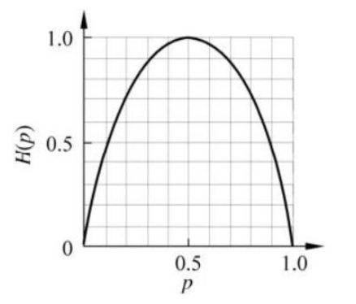

决策树是一种基本的分类与回归方法。本章主要讨论用于分类的决策树。
决策树可以认为是：
- if-then规则的集合
- 也可以认为是定义在特征空间与类空间上的条件概率分布。其主要优点是模型具有可读性，分类速度快。
学习时，利用训练数据，根据损失函数最小化的原则建立决策树模型。
学习过程通常包含3个步骤：
- 特征选择
- 决策树的生成算法
- 决策树的修剪
预测时，对新的数据，利用决策树模型进行分类。
决策树学习的思想主要来源于：
- 1986年Quinlan提出的ID3算法
- 1993年Quinlan提出的C4.5算法
- 1984年Breiman等人提出的CART算法
5.1 决策树模型与学习
5.1.1决策树模型
分类决策树模型是一种描述对实例进行分类的树形结构。决策树由结点(node)和有向边组成。
结点有两种类型：
- 内部结点(internal node)，表示一个特征或属性
- 叶节点(leaf node)，表示一个类。
5.1.2 决策树与if-then规则(第一种理解方式)
将决策树转换成if-then规则的过程是这样的:
- 由决策树的根节点到叶节点的每一条路径构建一条规则
- 路径上内部结点的特征对应着规则的条件，而叶节点的类对应着规则的结论。
决策树的路径或其对应的if-then规则集合具有一个重要的性质:互斥并且完备。也就是说，每一个实例都被一条路径或一条规则所覆盖，而且只被一条路径或一条规则所覆盖。
5.1.3 决策树与条件概率分布(第二种理解方式;重要)
决策树还表示给定特征条件下类的条件概率分布。这一条件概率分布定义在特征空间的一个划分上。将特征空间划分为互不相欠的单元或区域，并在每个单元定义一个类的概率分布就构成了一个条件概率分布。
决策树的一条路径对应于划分中的一个单元。
决策树所表示的条件概率分布由各个单元在给定条件下类的条件概率分布组成的。
假设X为表示特征的随机变量，Y为表示类的随机变量，那么这个条件概率分布可以表示为P(Y|X)。X取值于给定划分下单元的集合，Y取值于类的集合。
各叶节点(单元)上的条件概率往往偏向于某一个类，即属于某一类的概率最大。决策树分类时将该结点的实例划分到条件概率大的那一类去。
5.1.4 决策树学习
假设给定训练数据集
其中，为输入实例(特征向量)，n为特征个数，为类标记，i=1,2,…,N，N为样本容量。
学习的目标是根据给定的训练数据集构建一个决策树模型，使它能够对实例进行正确的分类。
决策树学习本质上是从训练数据集中归纳出一组分类规则。
注意：预训练数据集不相矛盾的决策树，可能有多个，也可能一个也没有。我们需要的是一个与训练数据集矛盾较小的决策树，同时具有很好的泛化能力。
决策树学习的损失函数通常是正则化的极大似然函数。决策树学习的策略是以损失函数为目标函数的最小化。由此学习的目的就变成了在损失函数意义下选择最优决策树的问题。
因为从所有可能的决策树中选取最优决策树是NP完全问题。所以现实中决策树学习算法通常采用启发式方法，近似求解这一最优化问题，得到的决策树是次最优(sub-optimal)的。
5.2 特征选择
5.2.1 特征选择问题
特征选择在于选取对训练数据具有分类能力的特征。这样可以提高决策树的学习效率。
如果利用这个特征进行分类的效果与随机分类的结果没有很大差别，则称这个特征是没有分类能力的。经验上扔掉这样的特征对决策树学习的精度影响不大。
通常特征选择的准则是信息增益或信息增益比。
5.2.2 信息增益
5.2.2.1 熵
熵是表示随机变量不确定性的度量。
设X是一个取有限个值的离散随机变量，其概率分布为：
则随机变量X的熵定义为:
在上式中，如果，则定义0log0=0。当对数是以2为底时，熵的单位是比特；当对数是以e为底时，熵的单位是纳特(nat)。
由定义可知，熵只依赖于X的分布，而与X的取值无关，所以也可将X的熵记作H(p)。
证明：熵越大，随机变量的不确定性就越大。
从定义可验证(当其中一个时，H(p)=0,当X服从离散均匀分布时，H(p)=log n):
当随机变量只取两个值，例如1，0时，即X的分布为:
熵为:
这时，熵H(p)随概率p变化的曲线图如下图所示(分布为贝努里分布时熵与概率的关系):

当p=0或p=1时，H(p)=0，随机变量完全没有不确定性。
当p=0.5时，H(p)=1，熵取值最大，随机变量不确定性最大。
1 | def calcShannonEnt(dataSet,featIndex=-1): |
5.2.2.2 条件熵
设有随机变量(X,Y)，其联合概率分布为:
条件熵H(Y|X)表示在已知随机变量X的条件下随机变量Y的不确定性。
随机变量X给定的条件下随机变量Y的条件熵H(X|Y)，定义为X在给定条件Y的情况下的条件概率分布的熵对X的数学期望：
这里，，i=1,2,…,n。
当熵和条件熵中的概率由数据估计(特别是极大似然估计)得到时，所对应的熵与条件熵分别称为经验熵和经验条件熵。（0log0=0）。
1 | def calcConditionalEntropy(dataSet, featIndex, uniqueVals): |
信息增益表示得知特征X的信息而使得类Y的信息的不确定性减少的程度。
定义5.2(信息增益)特征A对训练数据集D的信息增益g(D,A)，定义为集合D的经验熵H(D)与特征A给定条件D的情况下的经验条件熵H(D|A)之差，即：
互信息：一般地，熵H(Y)与条件熵H(Y|X)之差称为互信息。
决策树学习中的信息增益等价于训练数据集中类与特征的互信息。
给定训练数据集D和特征A，经验熵H(D)表示对数据集D进行分类的不确定性。而经验条件熵H(D|A)表示特征A在给定的条件下对数据集D进行分类的不确定性。
那么它们的差，即信息增益，就表示由于特征A而使得对数据集D的分类的不确定性减少的程度。
对于数据集D，信息增益依赖于特征，不同的特征对应不同的信息增益。信息增益大的特征具有更强的分类能力。
设训练数据集为D，|D|表示其样本容量，即样本个数。设有K个类，k=1,2,…,K，。设特征A有n个不同的取值，根据特征A的取值将D划分为n个子集，。记子集中属于类的样本的集合为。即。于是信息增益的算法如下:
算法5.1(信息增益的算法)
输入:训练数据集D和特征A；
输出:特征A对训练数据集D的信息增益g(D,A)
计算数据集D的经验熵H(D)
计算特征A对数据集D的经验条件熵H(D|A)
计算信息增益
1 | def calcInformationGain(dataSet, baseEntropy, featIndex): |
5.2.3 信息增益比
信息增益算法的局限性：存在偏向于选取取值较多的特征的问题。
解决方案：使用信息增益比来对这个问题进行校正。
定义5.3(信息增益比)特征A对训练数据集D的信息增益比定义为其信息增益与训练数据集D关于特征A的值的熵之比，即
其中，，n是特征A取值的个数。
1 | def calcInformationGainRate(dataSet, baseEntropy, featIndex): |
5.3决策树的生成
1 | def createTree(dataSet, columns, chooseBestFeatureToSplitFunc=chooseBestFeatureToSplitByID3): |
5.3.1 ID3算法
ID3算法的核心是在决策树各个结点上应用信息增益准则选择特征，递归地构建决策树。
具体方法是：从根节点开始，对节点计算所有可能的特征的信息增益，选择信息增益最大的特征作为节点的特征，由该特征的不同取值建立子节点；再对子节点递归调用以上方法，构建决策树；直到所有特征的信息增益军很小或没有特征可以选择为止。最后得到一个决策树。
ID3算法相当于用极大似然法进行概率模型的选择。
算法5.2(ID3算法)
输入：训练数据集D，特征集A，阈值
输出：决策树T
- 若D中所有实例属于同一类，则T为单结点树，并将类作为该结点的类标记，返回T。
- 若，则T为单节点树，并将D中实例数最大的类作为该节点的类标记，返回T。
- 否则，按算法5.1计算A中各特征对D的信息增益，选择信息增益最大的特征。
- 如果的信息增益小于阈值，则置T为单节点树，并将D中实例数最大的类作为该节点的类标记，返回T
- 否则，对的每一可能值，依将D分割为若干非空子集，将中实例数最大的类作为标记，构建子节点，由节点及其子节点构成树T，返回T
- 对第i个子节点，以为训练集，以A-为特征集，递归地调用步(1)~步(5)，得到子树，返回。
ID3算法的局限性：ID3算法只有树的生成，所以该算法生成的树容易产生过拟合。
1 | def chooseBestFeatureToSplitByID3(dataSet): |
5.3.2 C4.5的生成算法
C4.5在生成的过程中，用信息增益比来选择特征。
算法5.3(C4.5的生成算法)
输入:训练数据集D，特征集A，阈值
输出:决策树T
- 如果D中所有势力属于同一类，则置T为单节点树，并将作为该节点的类，返回T
- 如果A=，则置T为单节点树，并将D中实例数最大的类C_k作为该节点的类，返回T
- 否则，按照式(5.10)计算A中各特征对D的信息增益比，选择信息增益比大的特征
- 如果的信息增益比小于阈值，则置T为单节点树，并将D中实例数最大的类作为该节点的类，返回T。
- 否则，对的每一可能值，依将D分割为子集若干非空，将中实例数最大的类作为标记，构建子节点，由节点及其子节点构成树T，返回T。
- 对节点i，以为训练集，以为特征集，递归地调用步(1)~步(5)，得到子树，返回。
1 | def chooseBestFeatureToSplitByC45(dataSet): |
5.4决策树的剪枝
决策树生成算法递归地产生决策树，直到不能继续下去为止。但这样的生成方式往往会导致过拟合。产生过拟合的原因在于学习时过多地考虑如何提高对训练数据的正确分类，从而构建出过于复杂的决策树。
解决方案:对决策树进行剪枝。
本节介绍一种简单的决策树学习的剪枝算法:
决策树的剪枝往往通过极小化决策树整体的损失函数或代价函数来实现。
设树T的叶节点个数为|T|，t是树T的叶节点，该叶节点有个样本点，其中k类的样本点有个，k=1,2,…,K，为叶节点t上的经验熵，为参数，则决策树学习的损失函数可以定义为：
其中经验熵为:
在损失函数中，将式(5.11)右端的第一项记作
这时有
式(5.14)中，C(T)表示模型对训练数据的预测误差，即模型与训练数据的拟合程度。|T|表示模型复杂度。参数控制两者之间的影响。较大的促使选择较简单的模型(树)，较小的促使选择较复杂的模型，意味着只考虑模型与训练数据的拟合程度，不考虑模型的复杂度。
其实就是对模型复杂度进行惩罚。进行高偏差和高方差之间的权衡策略。
式(5.11)或式(5.14)定义的损失函数的极小化等价于正则化的极大似然估计。所以，利用损失函数最小原则进行剪枝就是用正则化的极大似然估计进行模型选择。
算法5.4(树的剪枝算法)
输入：生成算法产生的整个树T，参数
输出：修剪后的子树
计算每个节点的经验熵
递归地从树的叶节点向上回缩
设一组叶节点回缩到其父节点之前与之后的整体树分别为与，其对应的损失函数值分别为与，如果：
则进行剪枝，即将父节点变为新的叶节点。
返回2，直至不能继续为止，得到损失函数最小的子树。
使用动态规划实现决策树剪枝算法
参考文献：A Fast, Bottom-Up Decision Tree Pruning Algorithm with Near-Optimal Generalization
5.5 CART算法
分类与回归树(classification and regression tree, CART)模型由Breiman等人在1984年提出，是应用广泛的决策树学习方法。
CART同样由特征选择、树的生成、以及剪枝生成。既可用于分类也可用于回归。
CART是在给定输入随机变量X条件下，输出随机变量Y的条件概率分布的学习方法。
CART算法由以下两步组成:
- 决策树生成:基于训练数据集生成决策树，生成的决策树要尽量大；
- 决策树剪枝:用验证数据集对已生成的树进行剪枝并选择最优子树，这时用损失函数最小作为剪枝的标准。
5.5.1 CART生成
决策树的生成就是递归地构建二叉决策树的过程。对回归树用平方误差最小化准则，对分类树用基尼指数(Gini index)最小化准则，进行特征选择，生成二叉树。
5.5.1.1 回归树生成
假设X与Y分别为输入和输出变量，并且Y是连续变量，给定训练数据集:
考虑如何生成回归树。
假设已将输入空间划分为M个单元，并且在每个单元上有一个固定的输出值，于是回归树模型可表示为:
当输入空间的划分确定时，可以用平方误差来表示回归树对于训练数据的预测误差。
用平方误差最小的准则求解每个单元上的最优输出值。易知，单元上的的最优值是上的所有输入实例对应的输出的均值，即
这里采用启发式方法对输入空间进行划分。选择第j个变量和它取的值s，作为切分变量和切分点并定义两个区域:
然后寻找最优切分变量j和最优切分点s。具体地，求解:
对固定输入变量j可以找到最优切分点s。
遍历所有输入变量，找到最优的切分变量j，构成一个对(j,s)。以此将输入空间划分为两个区域。
接着，对每个区域重复上述划分过程，直到满足停止条件为止。这样就生成一颗回归树。通常称为最小二乘回归树，现将算法叙述如下:
算法5.5(最小二乘回归树生成算法)
输入:训练数据集D
输出:回归树f(x)
在训练数据集所在的输入空间中，递归的将每个区域划分为两个子区域并决定每个子区域上的输出值，构建二叉决策树：
选择最优切分变量j与切分点s，求解
遍历变量j，对固定的切分变量j扫描切分点s，选择使式(5.21)达到最小值的对(j,s)。
用选定的对(j,s)划分区域并决定相应的输出值:
继续对两个子区域调用步骤(1)(2)，直至满足停止条件
将输入空间划分为M个区域，生成决策树:
5.5.1.2 分类树生成
分类树用基尼指数选择最优特征，同时决定该特征的最优二值切分点。
定义5.4(基尼指数)分类问题中，假设有K个类，样本点属于第k类的概率为，则概率分布的基尼指数定义为:
对于二类分类问题，若样本点属于第1个类的概率是p，则概率分布的基尼指数为：
对于给定的样本集合D，其基尼指数为：
这里是D中属于第k类的样本子集，K是类的个数。
如果样本集合D根据特征A是否取某一可能值被分割成和两个部分，即：
则在特征A的条件下，集合D的基尼指数定义为:
基尼指数表示集合D的不确定性，基尼指数表示经分割后集合D的不确定性。
基尼指数值越大，样本集合的不确定性也就越大，这一点与熵相似。
1 | def CalcGini(dataSet,featIndex=-1): |
算法5.6(CART分类树生成算法)
输入:训练数据集D，停止计算的条件
输出：CART决策树
根据训练数据集，从根节点开始，递归地对每个结点进行以下操作，构建二叉决策树：
- 设结点的训练数据集为D，计算现有特征对该数据集的基尼指数。
- 对每一个特征A，对其可能取的每个值a，根据样本点对A=a的测试为”是”或”否”将D分割成和两个部分；
- 利用式(5.25)计算A=a时的基尼指数。
- 在所有可能的特征A以及它们所有可能的切分点a中，选择基尼指数最小的特征及其对应的切分点作为最优特征与最优切分点。依最优特征与最优切分点，从现结点生成两个子节点，将训练数据集依特征分配到两个子结点中去。
- 对两个子结点递归地调用(1)(2)，直至满足停止条件。
- 生成CART决策树
算法停止计算的条件是:
- 结点中的样本个数小于预定阈值
- 或样本集的基尼指数小于预定阈值(样本基本属于同一类)
- 没有更多特征
1 | def chooseBestFeatureToSplitByGini(dataSet): |
5.5.2 CART剪枝
CART剪枝算法由两部组成:
- 首先生成算法产生的决策树底端开始不断剪枝，直到的根结点，形成一个子树序列；
- 然后通过交叉验证法在独立的验证数据集上对子序列进行测试，从中选择最优子树。
Breiman等人证明:可以用递归的方法对树进行剪枝，将从小增大,，产生一系列的区间;剪枝得到的子树序列对应着区间的最优子树序列，序列中的子树是嵌套的。
具体地，从整体树开始剪枝。对的任意内部结点t，以t为单结点树的损失函数是:
以t为根节点的子树的损失函数是:
当及充分小时，有不等式:
当增大时，在某一有:
当再增大时，不等式(5.29)反向。只要，与t有相同的损失函数值，而t的结点少，因此t比更可取，对进行剪枝。
为此，对中每一内部结点t，计算:
它表示剪枝后整体损失函数减少的程度。在中剪去g(t)最小的，将得到的子树作为，同时将最小的设为。为区间的最优子树。
如此剪枝下去，直到得到根节点。在这一过程中，不断的增加的值，产生新的区间。
算法5.7(CART剪枝算法):
输入：CART算法生成的决策树
输出: 最优决策树
设k=0，
设
自下而上地对各内部结点t计算，以及
这里，表示以t为根节点的子树，是对训练数据的预测误差。
- 对的内部结点t进行剪枝，并对叶结点t以多数表决法决定其类，得到树T。
- 设k = k+1，，
- 如果不是由根节点及两个叶结点构成的树，则回到步骤(3)；否则令。
- 采用交叉验证法在子树序列中选取最优子树。